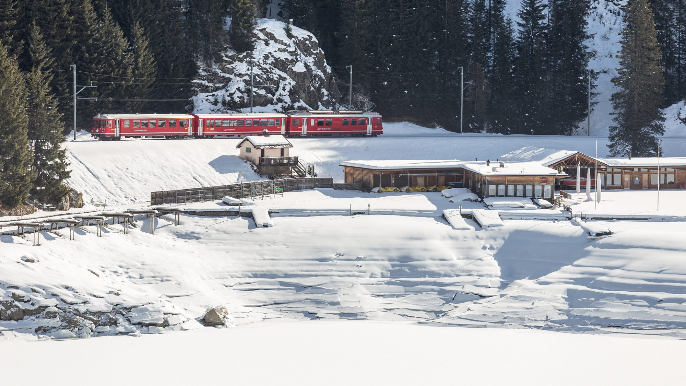
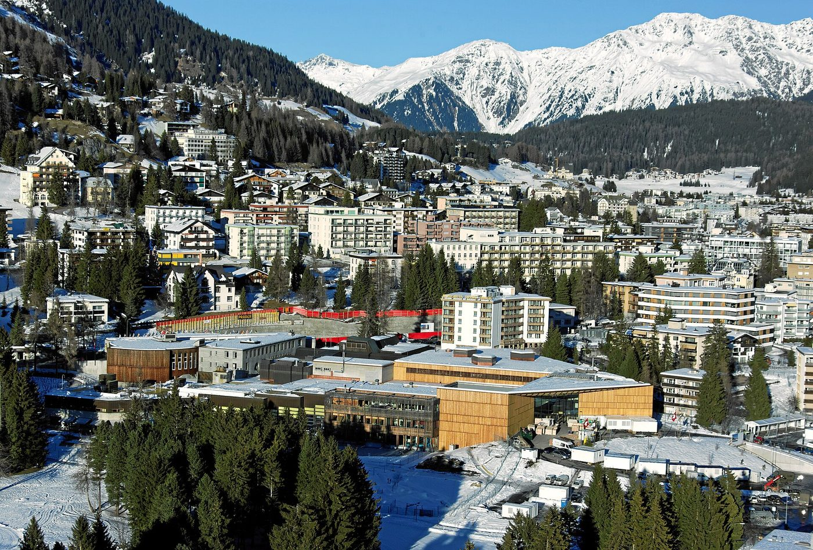
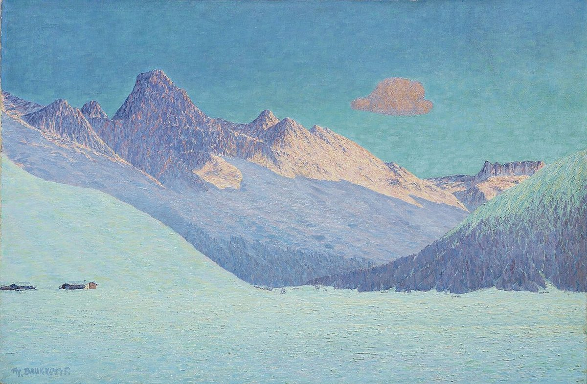
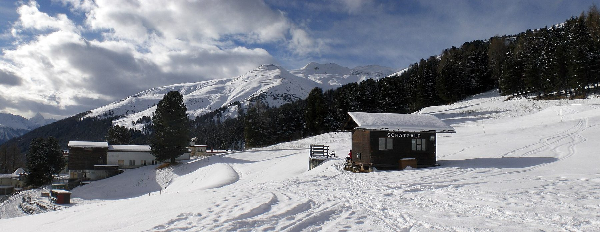
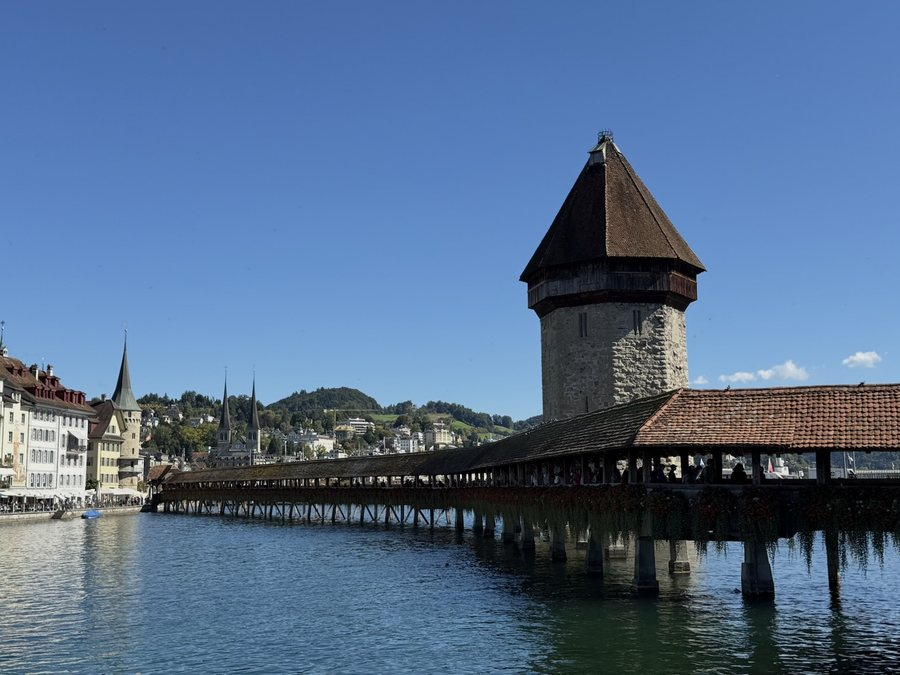
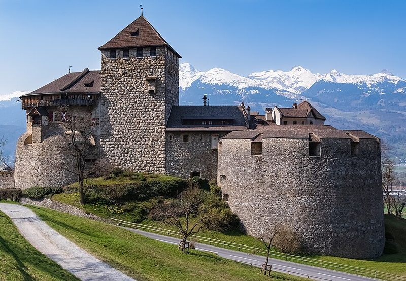
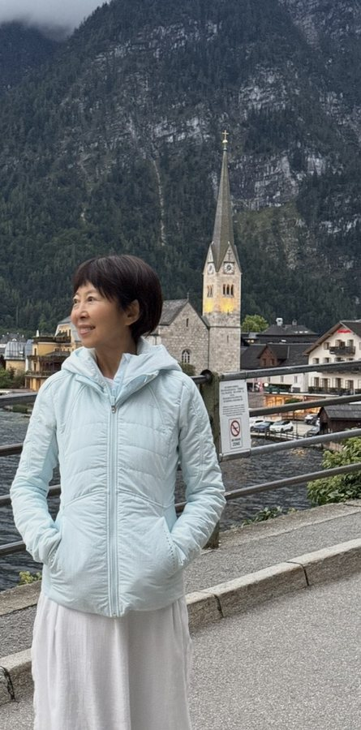
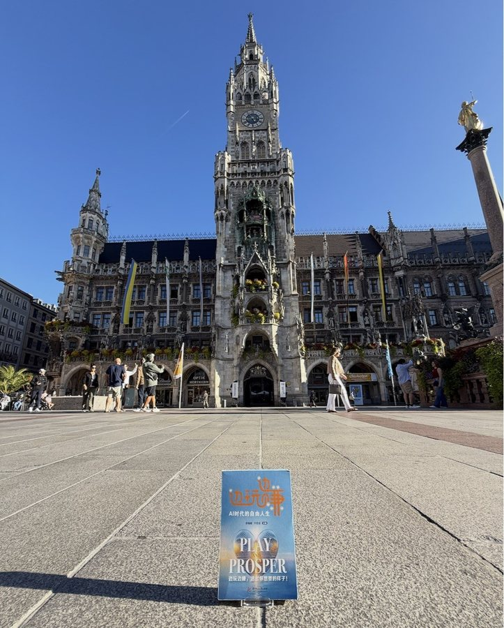
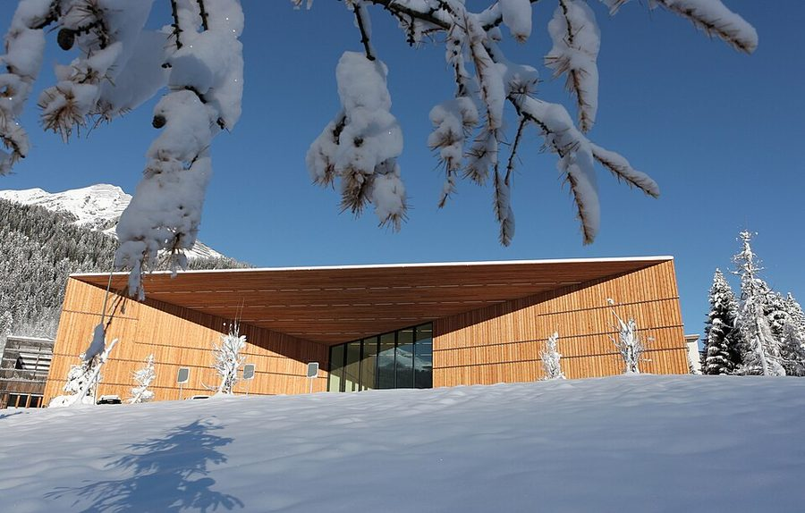
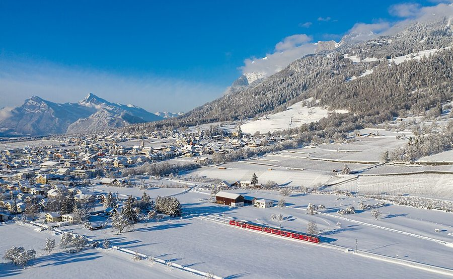

An independent private program co-hosted by Lily Li (Play and Prosper) and Swiss Hahama. Not affiliated with the World Economic Forum (WEF); does not include access to the official Annual Meeting venue.
An Invitation
Some questions can't be solved where you usually stand.
It's not that you aren't trying hard enough. It's that the answers around you all start to sound the same.
So this time, we change the room. We go to Davos, hear how people from different countries think about technology, capital, growth and the future, and sit down with people who run real businesses to compare notes.
You don't need a polished business plan. You only need one real question.
Sound Familiar?
If you've been thinking lately…
My business has grown, but there are fewer and fewer people I can really think things through with.
I read AI news every day, and I still can't see clearly how it will change my business.
I want to take my work across borders, but I don't know what people out there are thinking or looking for.
I'm busy all year. There isn't a single week where I truly stop and think.
Then this trip was made for you.
Picture This
Picture that week in January 2027
Morning
You open the window of a house below the snow peaks; the valley is still white. After breakfast you take the little mountain train. By the time you reach Davos, heads of state, CEOs and scientists are walking into the Congress Centre.
Midday
You walk down the Promenade. On your left, AI House; on your right, a country pavilion. A few people at the door are discussing, in different languages, the very question you brought.
Evening
At the Magic Mountain Forum, it's your turn to put your question on the table. When you finish, someone says: "I might be able to help with that."
Coming down
Your question may not have a textbook answer. But you know exactly the first thing you'll do when you get home.

A week like this comes once a year.
The Question Journey
How one question meets the world
The whole trip starts from your question, not from a sightseeing list.
01
Write your question
When you apply, write down the one business question you most want to solve and haven't cracked yet.
02
Draw a question map
Before we leave, we use AI to map the global agenda topics, side events and people that matter for your question.
03
Go where it's happening
In Davos, follow your map: listen, ask, and hear how people from other countries and industries see it.
04
Debrief by the fire
In the evenings we sit together, bring out what we heard that day and pull it apart with the people at the table.
05
Write it up
After the mountain, you turn your question and answers into a signed essay for our book.
Your Question Map
A question map for everyone
A week before departure you receive a map built around your question. AI does the deep research on public information; we judge what's most worth your time.
MY QUESTION
The question you bringe.g. With AI here, should I restructure my support and content teams?
GLOBAL AGENDA
Which WEF 2027 theme it maps toe.g. 05 · Empowering humanity in the age of AI
WHERE TO GO
Venues worth visiting, side events worth applying fore.g. Open sessions at an AI house; two side events on work and skills
WHO TO MEET
The kind of people worth knowinge.g. Business owners who have already rebuilt their teams with AI
AFTER DAVOS
Your first step back homee.g. A 30-day pilot in one department
Example only. During the week you'll enter three kinds of spaces: country and theme houses on the Promenade that are open to the public; side events that require separate registration (we help you apply; admission is up to each organizer); and our own Magic Mountain Forum.
Why Davos
In January, the world meets in Davos
Every January, global policy, capital, technology and business thinking collide in this small town for one week. Inside the main venue sit heads of state and the leaders of the world's largest companies. Outside, along the one-kilometre Promenade, hundreds of side events run at the same time.
We don't come for the buzz. We come to find the threads that connect to our own next step.
In Davos, the scarce thing isn't distance. It's attention. We help you spend your time on the ideas worth hearing and the people worth meeting.

Davos and the Congress Centre · World Economic Forum · CC BY-SA 2.0
1971The first meeting in Davos
1979The Forum opens its doors to China
~3000Expected participants in 2027
2027The 57th meeting, and our first time up the mountain
WEF 2027 · Theme
The 2027 Annual Meeting theme
Deliberate Conversations on the Future
Calm, considered conversations about what comes next. Around it, the meeting asks five questions:
01 · Growth
How can new growth and jobs reach more people?
Growth & jobs for more people
02 · Planet
How can climate and nature solutions drive economic progress?
Climate & nature for progress
03 · Resilience
How do we stay resilient and competitive in a more contested world?
Resilience in a contested world
04 · Energy
How can energy and infrastructure accelerate prosperity?
Energy & infrastructure
05 · AI & People
How do we empower humanity in the age of AI?
Empower humanity in the age of AI
The question we ask at our forum
The World Economic Forum discusses how the world moves into the future. We ask: as the world changes, how will your business, your choices and your life change with it?

Philipp Bauknecht, Winterabend in Davos · Public domain
The Magic Mountain
Why "The Magic Mountain"
Bring your own question, and hear what the world has to say.
Davos is where Thomas Mann set his novel The Magic Mountain. Every January this "magic mountain" fills with people looking for answers for the world. We go up with questions too.
We don't promise everyone will find an answer. But when you come down, you will see your question more clearly than when you went up.
Afterwards, these questions and what we learned become the "Magic Mountain" chapter of our new book, Play and Prosper: Through Joy and Sorrow, Answering Life with a Smile (Chinese edition). Ask on the mountain; answer in the book.

Magic Mountain Forum
The Forum & Closing Dinner
Thursday, January 21 is our own forum. After three days of walking and listening in Davos, we stop rushing and give a whole day to the people at this table. In the evening, a closing dinner with a sense of occasion. The format stays a surprise until the day.
One hintEveryone takes the stage once as the "case owner": you put your question on the table, and everyone helps you take it apart.
New friends you meet in Davos that week are welcome to join us at the table.
We build the stage. The world takes a seat. You leave with your own answer.
Eight Days
Eight days
The 2027 Annual Meeting runs January 18–22. The main program is 5 days and 5 nights: arrive January 17; Monday to Wednesday in Davos during the busiest days of houses and side events; Thursday is our own Magic Mountain Forum; fly home on the morning of the 22nd. Want to stay longer? Join the Alpine extension on the 22nd and 23rd and fly home on the 24th: 8 days, 7 nights in total. We stay the whole week in the same private chalet below the snow peaks. No hotel changes, no dragging suitcases. Security is tight during the meeting, so we go in and out of Davos by train: no traffic jams, no checkpoints.
Main Program · Davos (5 days, 5 nights)
ArrivalDAY 01
Sun, Jan 17
Arrival · First Night
Pickup at Zurich, then up into the valley to our chalet below the snow. At dinner, everyone shares one thing: the question I brought.
DavosDAY 02
Mon, Jan 18 · Opening
Walk the Promenade
With a local friend as guide, we visit the country, company and theme houses open to the public (such as AI House) and get the whole picture of the week.
DavosDAY 03
Tue, Jan 19
Follow Your Map
By day, follow your question map to the side events and forums you registered for. In the evening, back at the chalet, we talk through what we heard.
DavosDAY 04
Wed, Jan 20
Meet · Interview · Portraits
Return to the most useful venues for meetings, deep conversations and interviews. Our photographer takes a portrait series of each of you in Davos.
The ForumMain finaleDAY 05
Thu, Jan 21
Magic Mountain Forum · Dinner
No rushing into town. By day we run our own stage: each person takes a turn as case owner while everyone helps take the question apart. In the evening, dress up for a closing dinner with a sense of occasion, captured by our photographer.
← Swipe to see all five days →
Extension · Alpine Day Trips (optional, highly recommended)
You've come a long way, so make it count. After the meeting, see a bit of the Alps: Lucerne's old covered bridge, a hilltop castle, a lakeside village below the peaks, Munich's old town. A different country each day. Snow outside the window, the week's companions beside you, and the things you figured out this week settling in on the road.
Extension trips (Jan 22–23): each is under three hours one way, there and back the same day, and we sleep at the chalet. A local friend guides us.

Switzerland · LucernePhoto by Lily · Autumn 2025

Liechtenstein · Vaduz CastleChristian David · CC BY-SA 4.0

Austria · HallstattPhoto by Lily · Autumn 2025

Germany · Munich, MarienplatzPhoto by Lily · Autumn 2025
Fri, Jan 22
Several Countries in a Day
From the chalet toward Liechtenstein and Austria, home by evening.
Sat, Jan 23
Germany · Wrap-up
Toward Munich to meet local friends. In the evening we look back: has my question found an answer? We write the first draft on the spot.
Sun, Jan 24
Down the Mountain
Everyone heads home, with a clearer direction.

Davos Congress Centre · World Economic Forum · CC BY-SA 2.0Lake Davos · JoachimKohler-HB · CC BY-SA 4.0

Graubünden in winter · Kabelleger / David Gubler · CC BY-SA 4.0
The schedule may shift with weather and the meeting program. Access to Promenade houses and side events follows each organizer's rules; we register you in advance.
Why Come
Why this trip is worth it
Be where it happens
Once a year, global policy, capital and technology meet in one small town. Skip the second-hand takes: go listen and ask for yourself.
Your question, taken seriously
The group is deliberately small. Every question gets put on the table and worked through by people who run real businesses.
A clearer direction
Not necessarily a ready-made answer. Maybe a new direction, a new business idea, or a decision you finally commit to.
A published author
You turn your observations, conversations and thinking into a signed essay in our book. This week goes on the record.
Photos and film
Our photographer follows the whole week: your portraits in Davos, plus a short documentary of the trip.
Fellow travelers
We live, walk and take the stage together. Not a stack of business cards, but people who will keep helping each other long after.
Who We're Looking For
We're looking for you if…
This table is deliberately small. Seats don't go by title; we look at what you're building, what you're thinking about, and what you bring to the people around you. We choose carefully, and we ask you to choose us carefully too.
You have real work in your handsA company, a product, or something you're pushing forward with everything you've got.
Your work is answering one of the five questions aboveGrowth and jobs, climate and nature, resilience and competition, energy and infrastructure, AI and people.
You want to give valueShare at the table, make introductions, so the people next to you gain something because you were there.
You're open to being filmed, and to writingYou agree to be photographed and filmed, and to contribute an essay.
You don't mind living togetherWe stay in a private chalet, not a standard hotel; living together is how the conversations go deep. Room types and arrangements are made clear before you confirm.
Your Hosts
Who takes you up the mountain
Co-hosted by Lily Li and Swiss Hahama: one based in the US, one living in Switzerland. Researching the agenda, choosing side events, local logistics, the dinner, the book afterwards: we handle the hard parts so you can focus on the people and the ideas.
Co-host · Dallas, USA
Lily Li 千百合
Business model strategist for founder brandsProducer & translator of 20+ bestsellersCo-founder, Play and Prosper
AI master's from the US, creator of 100+ AI agents. She helps founders, creators and business owners rebuild their business for the AI era, turning skills into assets and experience into products. She has led a hundred authors across 8 time zones to co-write books, without burnout: play and prosper.
Co-host · Switzerland
Swiss Hahama Lixue Yao
CEO, InterChange Consulting (Switzerland)Founder of a language education brandOrganizer, 2026 Davos international delegation
Living in Switzerland since 2013, she works in Swiss-Chinese cross-cultural consulting and multilingual education, and has helped 10,000+ families build their children's ability to learn English on their own. In January 2026 she brought partners from education, finance and tech to Davos. This time, she and Lily take you up the mountain together.
Photographer · Shanghai
Muxiao 木晓
Mindful photography artistCo-founder, Play and ProsperExplorer of everyday beauty
He finds his way through photography, witnessing the variety of life through lens and words. Founder of Play and Prosper's global check-in series and a nature-loving designer. This week, his job is to capture you in Davos.
How to Join
How to join
By application only. We read every application carefully.
STEP 01
Write your question
About 3 minutes: who you are, what you're working on, and the question you want to bring to Davos. We schedule a call as soon as we receive it; no need to wait for the deadline.
STEP 02
A 30-minute video call
Lily or Hahama talks with you to see whether we're the right fit for each other. Fees, rooms and itinerary are explained on the call.
STEP 03
Invitation & agreement
Within 48 hours of the call you receive a formal invitation, quote and participation agreement (including cancellation and consent terms).
STEP 04
Deposit & visa
Pay a 30% deposit within 3 days to hold your seat; the balance is due by December 31. If you need a visa, we send the invitation letter, accommodation proof and day-by-day itinerary right away.
STEP 05
Get ready, go up
An online meet-up in late December so everyone gets acquainted; by January 10 you receive your question map and prep list, including any brand materials you'd like to show and a message you'd like our photographer to record.
Application deadline: December 12, 2026 Closes early once all seats are filled
The form is in Chinese and English is welcome: just answer in English.
Want to talk first? Add Lily on WeChat
WeChat ID iamsohappy8, and mention "Davos".
If you hold a Chinese passport, please apply by December 1 to leave time for your Schengen visa.
Good to know before you go
Visa
US, Canadian, Australian and many other passports enter Switzerland visa-free (check entry rules before departure). Chinese passports need a Schengen visa: book a VFS appointment first; Swiss processing usually takes about 15 days, so we recommend applying by mid-December. Once you confirm, we provide the invitation letter, accommodation proof and itinerary.
Payment
Fees are explained on the call. A 30% deposit within 3 days of confirming; the balance by December 31.
Cancellation
Visa refused: full refund with the refusal letter (minus visa service fees already incurred). You cancel between deposit and December 31: 50% refund. Cancellations from January 1 are non-refundable but transferable to someone we've interviewed and approved. If we cancel: full refund.
Insurance
Please buy your own travel medical insurance with at least €30,000 coverage (required for Schengen visas); we recommend it also covers winter sports accidents and trip cancellation.
Accommodation
The whole week in one private chalet, about an hour from Davos by train. Room types (single or twin, private or shared bathroom) are given on the call; a single room may cost extra.
Venues
The official Annual Meeting venue is by WEF invitation only; we don't promise access. Side events are subject to each organizer's confirmation; if one isn't approved, we arrange an alternative.
Photos & essays
Photos, film and your essay are used only for the book and this program's promotion; you approve where they appear and which ones aren't used, as set out in the agreement. Business information shared at the forum stays confidential.
The book
First draft written on January 23, editing with our team in mid-February, final version in March; publication follows the publisher's schedule. The book is published in Chinese.
Can we get into the official Annual Meeting?
No, and we don't promise it. The main venue is invitation-only. We go to the houses, pavilions and side events outside it that are open to the public, which is where most people actually get the most value.
What language is the trip in?
Both Chinese and English. Lily and Hahama are with you the whole time and help with interpreting and introductions at side events.
What's included?
Accommodation, local transport (train passes during the meeting, cars for the day trips), home-style breakfasts, the forum dinner, photography, your question map and the book. Lunches are on your own; venues mostly offer light meals. Not included: international flights, visa fees and personal expenses. Exact fees are explained on the call.
Can I join only the main program?
Yes. January 17–21 is the main program, ending with the Magic Mountain Forum. The Alpine day trips afterwards are optional; you can fly home on the morning of January 22.
Do I have to write an essay?
Yes, it's part of the journey. You write a first draft on January 23, and our editors work with you afterwards, so don't worry about your writing.
An independent private program co-hosted by Lily Li and Swiss Hahama. Not affiliated with the World Economic Forum (WEF); does not include access to the official Annual Meeting venue. Admission to side events is subject to each organizer's confirmation.
The world's future won't be revealed in a week. But your own next step might become clear.
 Co-host · Dallas, USA
Co-host · Dallas, USA
 Photographer · Shanghai
Photographer · Shanghai